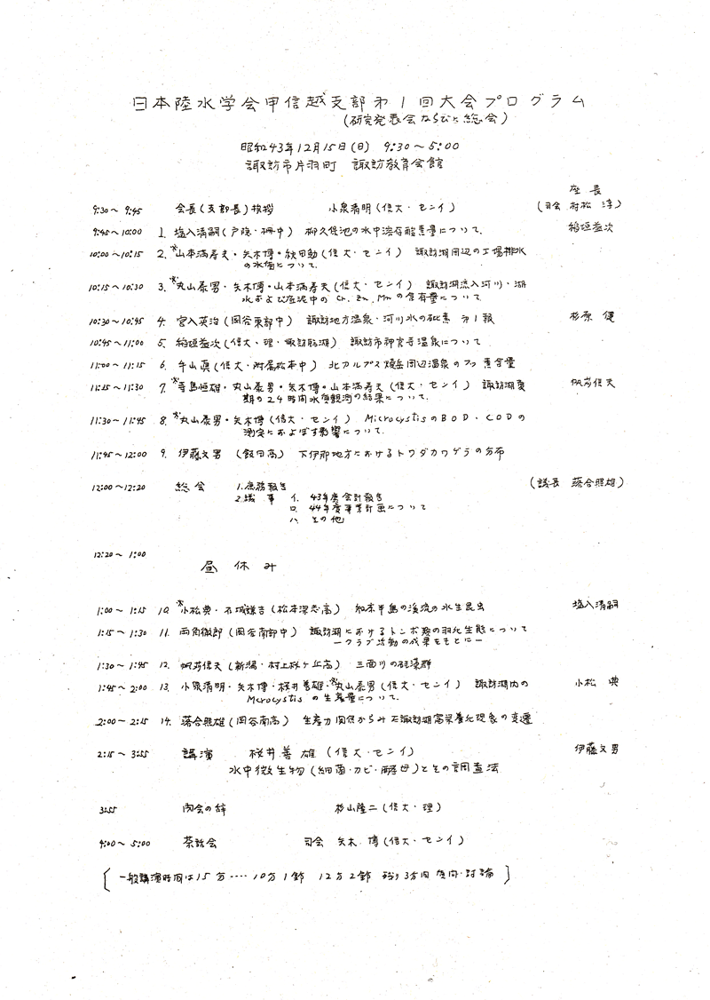

日本陸水学会甲信越支部会報発行までの日本陸水学会甲信越支部会活動記録
（日本陸水学会甲信越支部会報第13・14号合併号、ｐ105より）
1968（S43）6.6．支部会発足（日本陸水学会33回大会より承認されるー下諏訪町・山王閣）
会長 小泉清明（信大・繊維）
1968（S43）12.15．第1回研究発表会 諏訪市諏訪教育会館 会長 小泉清明（信大・繊維）
1969（S44）8.30－31．白樺湖合同調査（日本陸水学会誌31(4),1970および32(1),1971に発表）
1971（S46) 2.20. 第2回研究発表会 新潟大学理学部 会長 小泉清明（信大・繊維）
1977（S52）12.4．支部会活動再開 代表 桜井善雄（信大・繊維）
